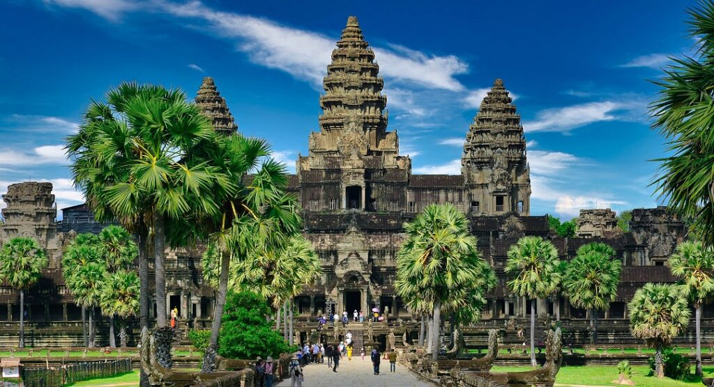

Cambodia.
Explore Cambodia with your own travel party. Shape the route, dates and pace with Senyum.

A journey to make your own.
Start with this route. Tell us your dates, who’s travelling and what you’d love to experience; we’ll help shape the details around you.
- Phnom Penh
- Siem Reap
- Angkor Wat
- Muslim-friendly travel
Your time in Cambodia.
DAY01Siem Reap Arrival
You will be welcomed and greeted by our professional tour guide at Siem Reap airport and transferred to the hotel (The room may not yet be ready until afternoon).
After checking in, we take a short walk along the road in front of the King’s Residence to see the Main Shrine, where the local people usually worship, with its statue of Yeay Teap, Preah Ang Chek and Preah Ang Chorm. Buying jasmine and lotus flowers to worship is very important for the Cambodians. We will also visit Artisans D’Angkor where young Cambodian are trained to learn how to do carving before visiting one of the city’s lively open market, Psar Chars, also called the “Old Market ”, where anything and everything is for sale! Overnight in a hotel in Siem Reap.
Meals: Dinner
DAY02Angkor Wat 1 Day Tour
After breakfast at the hotel, visit the most famous of all the temples on the plain of Angkor: Angkor Wat. The temple complex covers 81 hectares and is comparable in size to the Imperial Palace in Beijing . Its distinctive five towers are emblazoned on the Cambodian flag and the 12th century masterpiece is considered by art historians to be the prime example of classical Khmer art and architecture. Angkor Wat five towers symbolize Meru’s Five peaks – the enclosed wall represents the mountains at the edge of the world and the surrounding moat, the ocean beyond. We continue to the South Gate (with its huge statues depicting the churning of the ocean of milk), the ancient capital of Angkor Thom (12th century), Bayon Temple (unique for its 54 towers decorated with over 200 smiling faces of Avolokitesvara), the Royal Enclosure, Phimeanakas, the Elephants Terrace and the Terrace of the Leper King. We will end our day discovering Ta Prohm, one of the most beautiful temples. Ta Prohm has been relatively untouched since it was discovered and retains much of its mystery. Late afternoon, you will enjoy Remork ride (commonly called Tuktuk) around the city and you will have a blessing ceremony by Buddhist monk for the prosperity, happiness and safety for your trip. Overnight in a hotel in Siem Reap.
Note: During the visit of the Bakan Tower of Angkor Wat Temple
– Visitors are required to wear proper attire, covering shoulders and knees (no short, miniskirt or short trousers).
– Visitors have to be in the queue and waiting to climb up the Bakan Tower of Angkor Wat
– Children under twelve years old are not allowed to climb up this tower.
– It will be closed on the Buddhist Sabath Days, the Buddhist religious days (four days a month).
Meals: Breakfast · Lunch · Dinner
DAY03Siem Reap-Tonle Sap-Phnom Penh
Breakfast at the hotel, we visit the floating village , located about 15 kilometers south of Siem Reap. We take a boat trip in a traditional wooden boat on the Tonle Sap Lake , the “ Great Lakes” of Cambodia, one of the largest in Asia. We spend the rest of the day visiting the "Chantiers Ecoles – Les Artisans d’;Angkor; which provides training to young Cambodians in an effort to revive the ancient Khmer traditions of stone carving and wood sculpting. We take private vehicle to the capital city of Cambodia – Phnom Penh . On the way, we will have a chance to visit the ancient Naga Bridge. We also visit the stone carving workshop at Santuk
district as well as a quick visit at the spider market. Free at your own leisure. Overnight in Phnom Penh.
Meals: Breakfast · Lunch · Dinner
DAY04Phnom Penh Tour 1 Day Trip
Breakfast at a hotel. This morning we visit Independence Monument . From here we enjoy cyclo ride to the Royal Palace, built by King Norodom in 1866 on the site of the old town, and the Silver Pagoda. Located within the grounds of the Royal Palace, the Silver Pagoda is so named because of its floor, which is made up of 5000 silver tiles. The treasures found inside include a solid gold Buddha encrusted and weighing 90 kilograms and a small 17th century emerald and baccarat crystal Buddha. Lunch at a local restaurant. Afternoon, we visit the National Museum, also called Musee des Beaux-Arts. A French archaeologist and painter, Georges Groslier, designed it in Khmer style in 1917. The museum contains a collection of Khmer art – notably sculptures – throughout the ages. We spend the rest of time at Phnom Penh’s Psar Toul Tom Pong , known as the Russian Market , a great place to hunt for souvenirs, curios, and silks before heading to enjoy a one hour sunset cruise on the Mekong River. Overnight in Phnom Penh.
Meals: Breakfast · Lunch · Dinner
DAY05Hanoi Departure
Breakfast at a hotel. we visit the Toul Sleng Prison Museum and the Killing Fields of Choeung Ek-both grim reminders of Cambodia’s bloody past under Pol Pot.
It is almost inconceivable to confront the nature of true evil here in this gentle land, but the Buddhist memorial at Choeung Ek , commemorates the 1.7 million victims of the 1975-79 Pol Pot regime. This excursion may prove distressing for some. It is, however, an important piece of this country’s historical and cultural puzzle. Free time at your own leisure till departure transfer to airport.
Meals: Breakfast · Lunch
Final routes, accommodation, meals and travel arrangements are confirmed with your consultant before booking.
Let’s get the details right.
Share your preferred dates, number of travellers and any special requests.
Confirm hotels, flights, transfers, meal arrangements and the final price with our team.